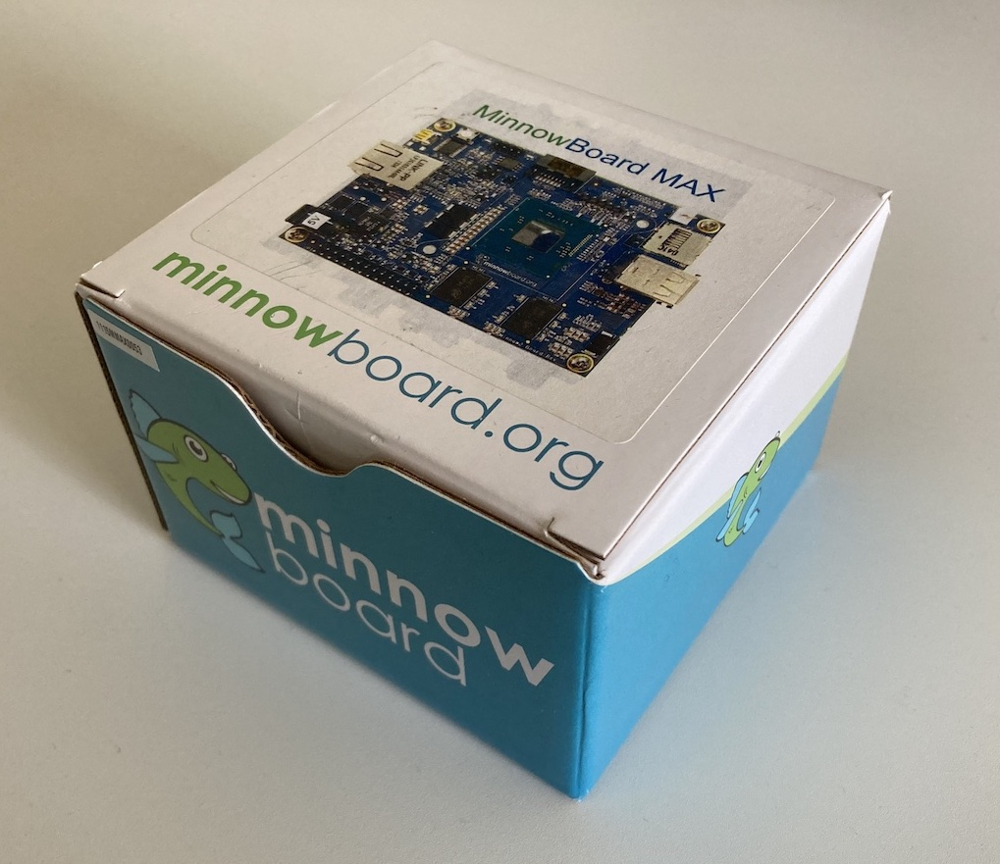
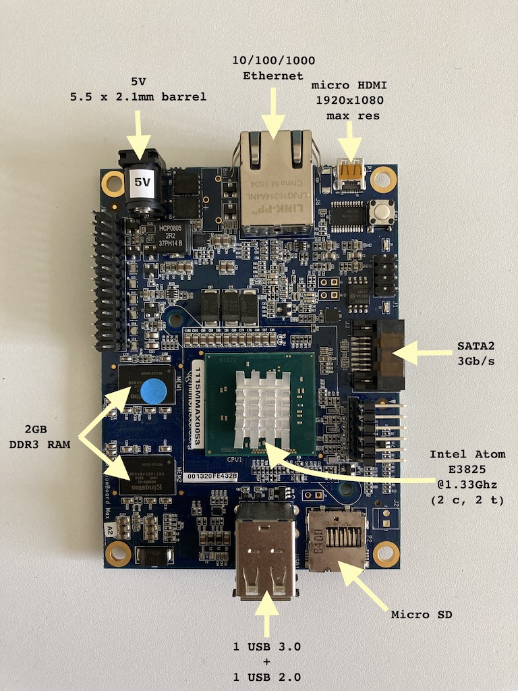
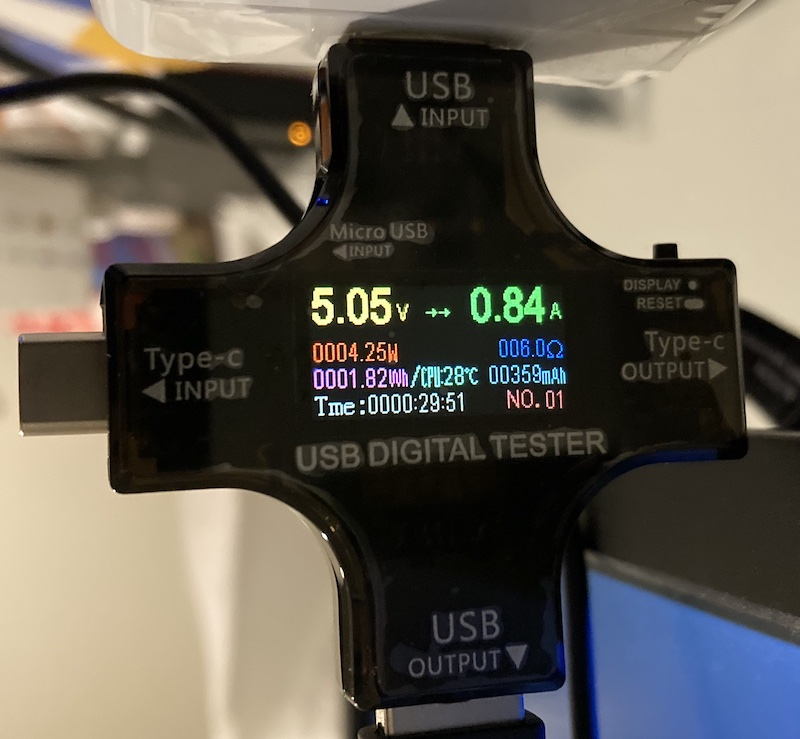

OPNsense on MinnowBoard

Figure 1: MinnowBoard Max
The Garage and MinnowBoard
One of the nicest perk of working at Microsoft, that not many people know about, is access to the Microsoft Garage. It is a maker space with an immensely helpful community around it. Recently, in one of the "spring cleaning" event, where they got rid of old hardware, I got my hands on MinnowBoard. It is a x86 based single board computer.
It has a Gigabit ethernet port and a USB 3.0 port. I had been wanting to play with one of the advanced firewalls after reading a couple of articles1,2 from a long time. This board gave me the perfect opportunity to try out OPNsense, an open source Firewall and Routing software.

Figure 2: MinnowBoard Specs
Installation
Creating installation USB drive is pretty straightforward, you can download the latest
image of OPNsense from the official webpage and use one of the image flashing utility3
to flash OS images to the USB drive or use the dd command.
Booting Issues
MinnowBoard can boot from various sources including USB drive, PXE server, SD card and SATA drive. I got two boards from the event but both of them had distinct issues. One of the two could not boot off of a USB nor a SD card, so it would always get into the default interactive script mode.
The other could boot from the USB drive but had damaged SD card slot. So, the only option for installation were either a SATA drive or another USB drive. Since I did not have a spare SATA SSD at that time, I tried installing OPNsense on the board 2 on a USB 3.0 drive. The installation went smoothly, but, when I tried to boot it from the installed drive, it turned out that the board can boot only from the USB 2.0 port.
Firmware Upgrade
I got a little upset and decided to take a break, I had already spent a little too much time in trying different combinations of USB drives, installation media and configurations.
The next day, when I had already given up on idea of installing and running OPNsense, I decided to upgrade the firmware for no reason, except to see how it's done. I had never upgraded firmware on a SBC before so this was a good opportunity to try it out. I downloaded the latest firmware release from the Intel's website. Followed the instructions:
- copy the
.efifiles and the upgrade utility to a USB drive - Determine the current firmware architecture (i32 vs x86)
- Use the appropriate utility and select target firmware version
- Upgrade!
Here are the commands I used for reference:
fs0:/ # this changes the current working directory to the USB drive root
cd firmware
./i32utility ./firmware/x86latestversion.efi # utility arch depends on the arch currently on the system and firmware arch depends on what we want
I tried this on Board 1 since it couldn't boot from a USB drive. So, it was first in line to try out experiments. Fortunately, for me and the board 1, the upgrade was successful and the board was not completely bricked. It was able to turn on and was now able to boot from a USB!
Installing OPNsense
The installation went smoothly after that. I was able to choose SD as the destination for installation and the board could smoothly boot from the SD card
Running OPNsense
Configuration and Services
- Before OPNsense
+----------+ +-------------------------------+
| | | Modem + Router |
| ISP |---------→| (all-in-one) |
| | +-------------+-----------------+
+----------+ | Wireless AP | Router |
| (on) | (Wired hosts |
| | connected here) |
+-------------+-----------------+
- After Installing OPNsense
+----------+ +-------------------------------+
| | | Modem + Router |
| ISP |---------→| (all-in-one) |
| | +-------------+-----------------+ +---------------+
+----------+ | Wireless AP | Router | | MinnowBoard |
| (off) | (MinnowBoard |-------→| running |
| | connected here) | | OPNsense |
+-------------+-----------------+ +---------------+
|
↓
+-------------+----------------+
| Wireless AP | Router |
| (on) | (Wired hosts |
| | connected here |
+-------------+----------------+
CPU Utilization Issue
The board was running OPNsense but it was slow. Network requests were taking forever to return and in some cases, packets were dropped. After looking at the health page, it was clear that this performance issue was due high CPU utilization. The CPU was active 97% to 100% all the time. This was the third time I decided to give up on using this board for running OPNsense. I thought that the board simply did not have enough resources to run OPNsense.
The next day, I decided to push one last time by trying to get the utilization low by maybe deactivating some of the expensive services such as Intrusion Protection. After searching the internet, I found out that disabling the IPv6 option in the DHCP, the utilization drops. And that worked for me! After disabling the IPv6, the utilization dropped to 10%. Even after enabling other services, the utilization remains below 50%.
Performance
TODO iperf using Gigabit switch
Power Consumption

Figure 3: Power Consumption while running OPNsense.
Idle Temperature
Final Thoughts
- OPNsense is a secure, FreeBSD based firewall with frequent updates.
- OPNsense gives more control and insights about home network, along with some useful features:
- ability to create VLANs
- one use case could to keep trusted devices such as personal computer on one network and other devices, such as smart TVs, voice assistants, on a different network.
- network monitoring along with request and bandwidth monitoring
- firewall and adblock
- ability to run VPN server - this is helpful while accessing public open WiFi (example at airports/cafes) and to access local resource without exposing them to the public internet
- ability to create VLANs
- MinnowBoard is a capable and low power consuming way of running OPNsense. It can run at ~$xx per year.
Footnotes: